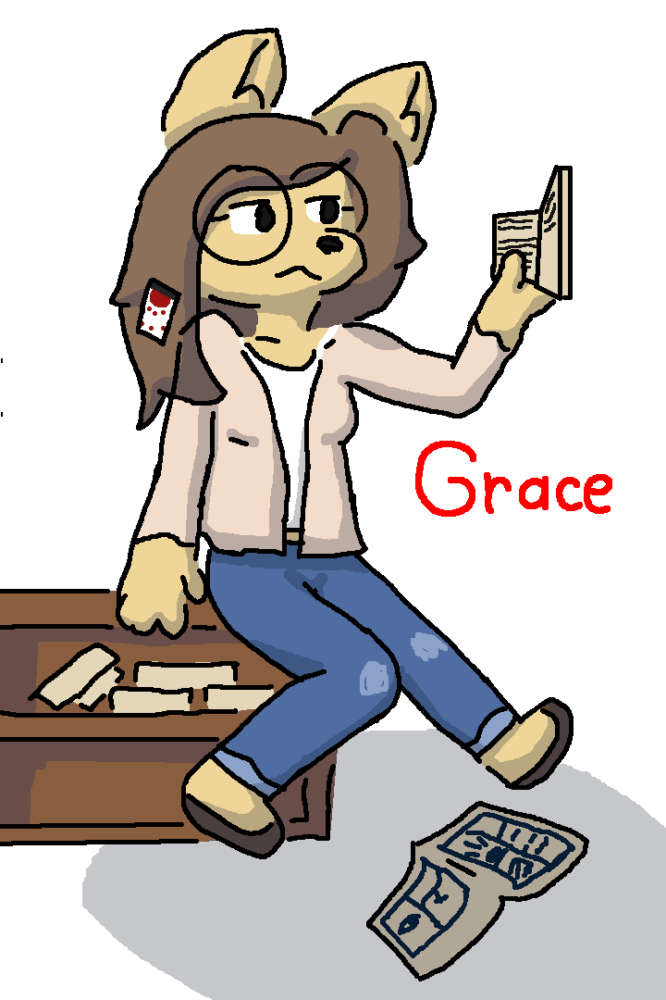

Grace

Grace was born in intellectual family, where all in her family was writers and readers. Sunrise decided to take her to writing school when she had 4 years old. Grace started to be interested in books, and she started to reading them alot. They - "She deserved that! She can grow by herself, and grow even faster, that her vessel"
In school, Grace was famous by her forthrightness. She can tell about others honestly and understandable, and so, some students are asking for honest description of the each other. Almost all hates her because she tells truth about them and then started to think, what she spies on them. Some of them are gladly to understand their mistakes. Grace's friend, River - "I was kinda jerk. I provoked Theo, what he have defensed me, because I had a bag of sweets. Grace's honest speech was rude, but I like discovering a solution's deep caves.".
Grace - "Why are still coming to me, and asking for a roast????"
After gradulation, Grace decided to go to more philological direction by starting learn German. While she's stydied, she discovered what there's a whole book group, what are mainly interested in, well books. Also she discovered a job as library assistance. At least, she was satisfied about her work...
In the group, Grace met with all members of the group, including Stefan. Grace - "I thought, what he is she, but after a first word, he seems to me weirdo". After for a week she got adapted and she can show herself in bright side. She started to get in manga world, and she likes it. Her parents ofter visited Grace in the group, and discuss with other readers. Grace - "They often tell about their work and their impressions about what they read. I'm gladly, what they are our family"
When Grace was took to Anime by Stefan before 4th Mind war:
Stefan - "Hey Grace! I heard your argued, but I was disagree with your parents. So, I decided to take you"
Grace - "Really? Of course I will be with you!".
Stefan - "Are you have love attration?"
Grace(embarassing) - "No...".
Stefan - "So, are we going?"
They sneakly left Grace's home and Stefan told his parents, time to begin.
She realised, what mistake she made...
*While they're in floating vehicle*
Grace - "Know you what, Stefan, but I'm feeling weirdly"
Stefan - "What's wrong?"
Grace - "Well, my parents still disagree with me. I think, what it's for a best..."
Stefan - "Don't worry, they will be ok!"
After coming back to the Fur, she check it out, and goes to her parents with a huge hug. Grace told about her decisions and her experience. They forgive her for the behaviour.
When 5th Mind war was occured, she tried to lead the group, and they decided to hide in Land's bunker for refugees. They took place and started to discuss political themes like: Why Fur is joining to Tol block?, Is Lang got paid by F<3 to take over the region with the bunker, etc. Some of the refugees are came here to discuss their political problems. After 5th Mind war, Grace and group realised, what the territory, where suppost to be Fur now is Lang, and Grace decided to still stay in place, where they found the group. Only was one question, where is Stefan right now?
Eventually, Grace found Stefan, and later she gathered him for birthday. In one time, Grace had developed her attraction to Stefan. She fell in love with him. Grace knows that he hasn't got first kiss, so decided to kiss him. At Valentine's cycle, when she waited for him. When Stefan came, he gave her pretty flowers. For exchange, Grace brought Stefan to a room on the bookshelf. Stefan is starting to feel anxious. Is he feeling something is wrong? Grace said what it's ok, and asked him to stay still, because she wanted to tell a secret. Before she tells, she gives him a friendship bracelet. It has a specific purple color palette and 3 stripes on it. Grace later came closer, and closer. Grace reached Stefan too fast, so he couldn't escape this, but she kissed him on his cheek, instead of telling him the secret. Stefan was so warmly impressed... This sensitivity went for Stefan and Grace uniquely. After the kiss, they felt a little embarrassment. When they were going out, they were asked where they were for so long. Gray, and others worried about them, are kidnapped. Grace said she brought for him a friendship bracelet on his right wrist. Their chest let down after that. Stefan decides to accept his first kiss of Grace.